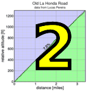

|  |  |
| llumix photos are up! |
Spectacular weather greeted week 3 of the Low-Key Hillclimbs as we embarked on a somewhat experimental climb: Portola State Park Road.
First, I want to thank the Open Space rangers for accommodating Low-Key with our week-to-go request for a permit to meet in the parking lot. There was some change of plans from our original, but it all worked out nicely in the end. If we return to this venue, we'll have things ironed out well in advance.
After a slightly, but only slightly chilly descent to the Portola State Park boundary, the Low-Key hoard set off for what's a first-ever climb for the series. This one had plenty of character: the alternating steep and gradual sections of the park road, then the much gentler West Alpine Road. Shifting and pacing became important, as did balancing efforts on the steeper sections with those on the more gradual sections.
The big group split up quickly as Portola State Park Road confronted riders immediately with steep grades: riders who forgot to shift out of their big rings after the descent to the start line immediately regretted their error. As usual, Bill Bushnell rode his hybrid electric at a pace even Contador could follow only under the influence of the finest Spanish beef. But behind Bill, Tracy Colwell started quickly followed by a group including Tim Clark, Kieran Sherlock, Brian Edwards, James Porter, Carl Nielson, and Rich Hill. One by one, however, riders fell off the pace, until only Tracy, Kieran, and Carl remained. Then it was only Tracy, who went on to cross the line alone, with Kieran and Carl 25 and 33 seconds behind.
Among the women, Janet Martinez scored strongly for the Sisters and Misters of No Mercy, finishing first. Karis McFarlane and Laura Egley were second and third.
Ruth and Marco Palmeri were back on their tandem this week. This was a tough one for a tandem, with the frequent shifting on the staircase climb requiring a well-coordinated pair. But Ruth and Marco are well-known in the Bay area for their expert tandem-riding, so were obviously up to the challenge. They take the lead in the overall tandem ranking.
In the juniors, Skyler Colwell continued his impressive run, showing he's not afraid of the steep stuff and moving into the overall junior points lead for the 2010 Low-Key series. He's also leading the Endurance standings.
Team Low-Key scored #1 this week, moving into second place in the overall rankings. Western Wheelers was a close second on the week, holding on to their first place overall, while the Sisters and Misters of No Mercy finished third to stay a close third in the overall.
Thanks again to our great volunteers this week for making a very challenging climb go so smoothly!
Added note: Carlos Reyes, who missed out on registration, rode the climb on his own and self-timed at an "off-the-record" 28:46.
Strava T-shirt qualifiers indicated with orange background.
| pl | # | name | team | cat | time | mph | fph | score |
|---|---|---|---|---|---|---|---|---|
| 1 | 6 | Bill Bushnell | Low-Key | It Is About The Bike | 19:25 | 14.65 | 5494 | 100.00 |
| pl | # | name | team | cat | time | mph | fph | score |
|---|---|---|---|---|---|---|---|---|
| 1 | 57 | Tracy Colwell | Team Colwell | 40+ | 24:03 | 11.83 | 4436 | 130.54 |
| 2 | 141 | Kieran Sherlock | Western Wheelers | 40+ | 24:28 | 11.62 | 4360 | 128.32 |
| 3 | 236 | Carl Nielson | Sr's & Mr's of No Mercy | 50+ | 24:36 | 11.56 | 4337 | 127.62 |
| 4 | 53 | Tim Clark | Low-Key | 40+ | 25:03 | 11.35 | 4259 | 125.33 |
| 5 | 1 | Dan Connelly | Low-Key | 3 | 25:24 | 11.20 | 4200 | 123.60 |
| 6 | 88 | Rich Hill | LGBRC | 45+ | 25:33 | 11.13 | 4175 | 122.88 |
| 7 | 332 | Dave Morton | San Jose Bike Club | 35+ | 26:08 | 10.88 | 4082 | 120.13 |
| 8 | 72 | Brian Edwards | The Dirkers | 26:18 | 10.81 | 4056 | 119.37 | |
| 9 | 170 | Ryan Bickerstaff | PowerBar | 25+ | 26:23 | 10.78 | 4043 | 118.99 |
| 10 | 326 | Clark Foy | San Jose Bike Club | U23 | 26:29 | 10.74 | 4028 | 118.55 |
| 11 | 304 | Rune Dahl | Western Wheelers | 45+ | 26:42 | 10.65 | 3996 | 117.58 |
| 12 | 7 | James Porter | Western Wheelers | 3 | 26:48 | 10.61 | 3981 | 117.14 |
| 13 | 165 | Niall Murray | Pacific Bikes | 25+ | 26:49 | 10.61 | 3978 | 117.07 |
| 14 | 218 | Tom Gardin | Low-Key | 45+ | 26:55 | 10.57 | 3963 | 116.64 |
| 15 | 213 | Chris Evans | Bikeforums.net | 30+ | 26:57 | 10.55 | 3958 | 116.49 |
| 16 | 301 | Marcel Appelman | Mission Cycling | 40+ | 27:03 | 10.51 | 3944 | 116.06 |
| 17 | 39 | Ron Brunner | Low-Key | 40+ | 27:13 | 10.45 | 3920 | 115.35 |
| 18 | 307 | Joe Fant | San Jose Bike Club | 50+ | 27:24 | 10.38 | 3893 | 114.58 |
| 19 | 325 | Julian Bibl | 20+ | 27:25 | 10.37 | 3891 | 114.51 | |
| 20 | 123 | Christian Paquet | Doogie | 50+ | 27:32 | 10.33 | 3875 | 114.02 |
| 21 | 338 | Marcus Gosling | contentworks | 40+ | 28:05 | 10.13 | 3799 | 111.79 |
| 22 | 96 | Martin Hyland | Western Wheelers | 50+ | 28:10 | 10.10 | 3787 | 111.46 |
| 23 | 219 | Bruce Gardner | Sr's & Mr's of No Mercy | 35+ | 28:11 | 10.09 | 3785 | 111.39 |
| 24 | 146 | Brian Sterling | 45+ | 28:23 | 10.02 | 3759 | 110.61 | |
| 25 | 262 | Carmelo Rios | Plus 3 | 50+ | 28:24 | 10.01 | 3756 | 110.55 |
| 26 | 65 | J.D. Daniels | Eden Bikes | 35+ | 28:25 | 10.01 | 3754 | 110.48 |
| 27 | 214 | Joe Fabris | Plus 3 | 50+ | 28:26 | 10.00 | 3752 | 110.42 |
| 28 | 341 | Brendan Gibson | 28:29 | 9.98 | 3745 | 110.22 | ||
| 29 | 104 | Michael Kolb | 45+ | 28:39 | 9.93 | 3724 | 109.58 | |
| 30 | 243 | John Richardson | Pen Velo/Pomodoro | 55+ | 28:48 | 9.88 | 3704 | 109.01 |
| 31 | 246 | Chuck Spiteri | Pen Velo/Pomodoro | 50+ | 29:05 | 9.78 | 3668 | 107.95 |
| 32 | 228 | Russell McCrary | Sr's & Mr's of No Mercy | 50+ | 29:06 | 9.77 | 3666 | 107.89 |
| 33 | 128 | Wojtek Poppe | Nvidia | 25+ | 29:07 | 9.77 | 3664 | 107.82 |
| 34 | 312 | Thomas Novikoff | Webcor/Alto Velo | Post-Whipple | 29:10 | 9.75 | 3658 | 107.64 |
| 35 | 136 | Curtis Ruegg | Pen Velo/Pomodoro | 45+ | 29:15 | 9.72 | 3647 | 107.33 |
| 36 | 124 | Steve Peck | Silicon Valley Triathlon | 40+ | 29:21 | 9.69 | 3635 | 106.97 |
| 37 | 30 | Matt Beadon | Nvidia | 30+ | 29:27 | 9.66 | 3622 | 106.60 |
| 38 | 46 | Gino Cetani | Western Wheelers | 40+ | 29:38 | 9.60 | 3600 | 105.94 |
| 39 | 151 | Peter Tapscott | Webcor/Alto Velo | 60+ | 29:46 | 9.55 | 3584 | 105.47 |
| 40 | 340 | Calvin Do | Silicon Valley Triathlon | 40+ | 29:48 | 9.54 | 3580 | 105.35 |
| 41 | 43 | John Carrino | Palantir | 4 | 29:55 | 9.51 | 3566 | 104.94 |
| 42 | 71 | Ron Dunn | Sr's & Mr's of No Mercy | 50+ | 30:03 | 9.46 | 3550 | 104.48 |
| 43 | 73 | Fred Egley | Dos Egleys | 45+ | 30:08 | 9.44 | 3540 | 104.19 |
| 44 | 226 | Bogdan Marian | Bikeforums.net | 30+ | 30:11 | 9.42 | 3534 | 104.01 |
| 45 | 305 | Harold DeGraff | Pen Velo/Pomodoro | 45+ | 30:15 | 9.40 | 3527 | 103.78 |
| 46 | 58 | Kevin Comerford | Eden Bikes | 30+ | 30:29 | 9.33 | 3500 | 102.99 |
| 47 | 303 | Robert Craun | Silicon Valley Triathlon | 20+ | 30:42 | 9.26 | 3475 | 102.26 |
| 48 | 62 | Vince Cummings | Portolariders | 50+ | 30:42 | 9.26 | 3475 | 102.26 |
| 49 | 311 | Jason Milliron | 25+ | 30:42 | 9.26 | 3475 | 102.26 | |
| 50 | 241 | Ryan Powell | 30+ | 30:44 | 9.25 | 3471 | 102.15 | |
| 51 | 330 | Donald Lee | Bikeforums.net | 40+ | 30:45 | 9.25 | 3469 | 102.10 |
| 52 | 50 | Eric Chi | Nvidia | 30+ | 30:46 | 9.24 | 3467 | 102.04 |
| 53 | 103 | Larry Klein | Doogie | 50+ | 31:02 | 9.16 | 3438 | 101.16 |
| 54 | 259 | Jens Weber | Doogie | 30+ | 31:06 | 9.14 | 3430 | 100.95 |
| 55 | 211 | Bryn Dole | Blekko | 35+ | 31:08 | 9.13 | 3427 | 100.84 |
| 56 | 161 | Alan Weatherall | San Jose Bike Club | 45+ | 31:17 | 9.09 | 3410 | 100.36 |
| 57 | 158 | David Vrane | Sr's & Mr's of No Mercy | 45+ | 31:27 | 9.04 | 3392 | 99.82 |
| 58 | 132 | Thomas Rabedeau | SLACer | 50+ | 31:31 | 9.02 | 3385 | 99.61 |
| 59 | 142 | Jeff Shute | 30+ | 31:31 | 9.02 | 3385 | 99.61 | |
| 60 | 105 | Mark LaForge | SS/L Cycling Club | 50+ | 31:47 | 8.95 | 3356 | 98.78 |
| 61 | 328 | Stefan Eberle | RSC G | 30+ | 31:49 | 8.94 | 3353 | 98.67 |
| 62 | 322 | Randy Erkson | 30+ | 31:53 | 8.92 | 3346 | 98.47 | |
| 63 | 327 | Nicholas Brummell | Atlas | 45+ | 31:58 | 8.90 | 3337 | 98.21 |
| 64 | 45 | Nathan Cauffman | UID | 30+ | 32:12 | 8.83 | 3313 | 97.50 |
| 65 | 98 | Peter Ingram | Independent | 55+ | 32:17 | 8.81 | 3304 | 97.25 |
| 66 | 60 | Richard Contreras | rhus | 50+ | 32:31 | 8.75 | 3281 | 96.55 |
| 67 | 41 | Patrick Callahan | Hara | 40+ | 32:54 | 8.64 | 3243 | 95.42 |
| 68 | 61 | Rob Cosaro | Doogie | 50+ | 33:01 | 8.61 | 3231 | 95.09 |
| 69 | 164 | Robert Zeljko | Almost There | 40+ | 33:03 | 8.61 | 3228 | 94.99 |
| 70 | 238 | Christopher O'Keefe | Atomic Bonk | 40+ | 33:14 | 8.56 | 3210 | 94.47 |
| 71 | 323 | Bill Facklerttug | Coretechs Cycling Team | 40+ | 33:15 | 8.55 | 3208 | 94.42 |
| 72 | 333 | Vinay Ravuri | Georgia Tech | 35+ | 33:17 | 8.54 | 3205 | 94.33 |
| 73 | 216 | David Fitch | San Jose Bike Club | 65+ | 33:32 | 8.48 | 3181 | 93.62 |
| 74 | 316 | Chris Toshok | Mission Cycling | 35+ | 33:33 | 8.48 | 3180 | 93.58 |
| 75 | 319 | Robert Wiser | 30+ | 33:33 | 8.48 | 3180 | 93.58 | |
| 76 | 85 | Gary Griffin | Bike Trip | 55+ | 33:49 | 8.41 | 3155 | 92.84 |
| 77 | 68 | Keith Devlin | Western Wheelers | 60+ | 34:13 | 8.31 | 3118 | 91.75 |
| 78 | 208 | Jay Cohan | Spike the Wonder Dog | 45+ | 34:42 | 8.20 | 3074 | 90.47 |
| 79 | 324 | Jack Holmgren | SF Randonneurs | 55+ | 34:57 | 8.14 | 3052 | 89.83 |
| 80 | 137 | Mark Sandori | LGBRC | 40+ | 34:59 | 8.13 | 3049 | 89.74 |
| 81 | 63 | John D Kastel | Death Valley | 45+ | 35:03 | 8.11 | 3044 | 89.57 |
| 82 | 231 | Edward Miller | SLACer | 70+ | 35:13 | 8.08 | 3029 | 89.15 |
| 83 | 66 | Jon Degenhardt | Argonauts | 50+ | 35:17 | 8.06 | 3024 | 88.98 |
| 84 | 320 | Paul Young | Silicon Valley Triathlon | 40+ | 35:43 | 7.96 | 2987 | 87.90 |
| 85 | 342 | Andreas Bibl | Webcor/Alto Velo | 35:48 | 7.94 | 2980 | 87.69 | |
| 86 | 157 | Scott Violet | 35+ | 35:52 | 7.93 | 2974 | 87.53 | |
| 87 | 32 | Bernard Bell | 50+ | 35:58 | 7.91 | 2966 | 87.29 | |
| 88 | 36 | Dan Brehmer | SLACer | 40+ | 36:22 | 7.82 | 2933 | 86.33 |
| 89 | 306 | Aron Digumarthi | Term Gern | 40+ | 36:30 | 7.79 | 2923 | 86.01 |
| 90 | 81 | Stephen Fong | San Jose Bike Club | 40+ | 36:43 | 7.75 | 2905 | 85.51 |
| 91 | 121 | Marco Palmeri | Bikeforums.net | Tandem | 40:41 | 6.99 | 2622 | 85.24T |
| 92 | 254 | Plamen Velikov | SLACer | 50+ | 38:00 | 7.48 | 2807 | 82.62 |
| 93 | 329 | Brian Birkeland | Alameda Velo | 40+ | 38:17 | 7.43 | 2787 | 82.01 |
| 94 | 42 | Kley Cardona | 45+ | 38:31 | 7.38 | 2770 | 81.51 | |
| 95 | 318 | Walter Wang | 35+ | 38:55 | 7.31 | 2741 | 80.67 | |
| 96 | 313 | Michael Rowen | SLACer | 55+ | 38:56 | 7.30 | 2740 | 80.64 |
| 97 | 335 | Murali Krishnan | Commuter | 40+ | 39:00 | 7.29 | 2735 | 80.50 |
| 98 | 334 | Thomas Maslen | Western Wheelers | 45+ | 39:03 | 7.28 | 2732 | 80.40 |
| 99 | 166 | Christian Hilty | Team America | 40+ | 39:11 | 7.26 | 2723 | 80.12 |
| 100 | 300 | Angel Alvarez | 40+ | 39:53 | 7.13 | 2675 | 78.72 | |
| 101 | 118 | Ronald Ng | Bikeforums.net | 45+ | 40:07 | 7.09 | 2659 | 78.26 |
| 102 | 107 | George Lee | Team Pain | 40:34 | 7.01 | 2630 | 77.39 | |
| 103 | 224 | Robert Lensch | F1 fans | 50+ | 42:34 | 6.68 | 2506 | 73.75 |
| 104 | 86 | Bob Gumaer | UID | 50+ | 44:00 | 6.46 | 2425 | 71.35 |
| 105 | 239 | Tony Otoole | F1 fans | 55+ | 46:21 | 6.14 | 2302 | 67.73 |
| 106 | 149 | Tim Sutton | Plus 3 | 50+ | 47:03 | 6.04 | 2267 | 66.73 |
| 107 | 155 | S.V. Vasudevan | Mocha Cookie | 40+ | 48:35 | 5.85 | 2196 | 64.62 |
| 108 | 339 | Jason Matt | 30+ | 54:40 | 5.20 | 1951 | 57.43 | |
| 109 | 336 | Tom Powell | 70+ | 57:41 | 4.93 | 1849 | 54.43 | |
| 110 | 56 | Skyler Colwell | Team Colwell | Junior | 72:38 | 3.92 | 1469 | 43.22 |
| pl | # | name | team | cat | time | mph | fph | score |
|---|---|---|---|---|---|---|---|---|
| 1 | 227 | Janet Martinez | Sr's & Mr's of No Mercy | 40+ | 30:54 | 9.20 | 3452 | 122.86 |
| 2 | 113 | Karis Mcfarlane | Eden Bikes | 30+ | 37:19 | 7.62 | 2859 | 101.73 |
| 3 | 74 | Laura Egley | Dos Egleys | 45+ | 38:09 | 7.45 | 2796 | 99.51 |
| 4 | 47 | Alison Chaiken | Sr's & Mr's of No Mercy | W 40+ | 42:14 | 6.73 | 2526 | 89.89 |
| 5 | 122 | Ruth Palmeri | Bikeforums.net | Tandem | 40:41 | 6.99 | 2622 | 85.24T |
| 6 | 171 | Letitia Davis | Plus 3 | 45+ | 44:36 | 6.38 | 2392 | 85.12 |
| pl | team | score | riders |
|---|---|---|---|
| 1 | Low-Key | 365.57 | Bill Bushnell, Tim Clark, Dan Connelly, Tom Gardin, Ron Brunner |
| 2 | Western Wheelers | 363.05 | Kieran Sherlock, Rune Dahl, James Porter, Martin Hyland, Gino Cetani, Keith Devlin, Thomas Maslen |
| 3 | Sr's & Mr's of No Mercy | 361.87 | Carl Nielson, Bruce Gardner, Russell McCrary, Ron Dunn, Janet Martinez, David Vrane, Alison Chaiken |
| 4 | San Jose Bike Club | 353.26 | Dave Morton, Clark Foy, Joe Fant, Alan Weatherall, David Fitch, Stephen Fong |
| 5 | Pen Velo/Pomodoro | 324.29 | John Richardson, Chuck Spiteri, Curtis Ruegg, Harold DeGraff |
| 6 | Bikeforums.net | 322.60 | Chris Evans, Bogdan Marian, Donald Lee, Ronald Ng, Marco Palmeri, Ruth Palmeri |
| 7 | Nvidia | 316.47 | Wojtek Poppe, Matt Beadon, Eric Chi |
| 8 | Doogie | 316.14 | Christian Paquet, Larry Klein, Jens Weber, Rob Cosaro |
| 9 | Eden Bikes | 315.20 | J.D. Daniels, Kevin Comerford, Karis Mcfarlane |
| 10 | Silicon Valley Triathlon | 314.58 | Steve Peck, Calvin Do, Robert Craun, Paul Young |
| 11 | Plus 3 | 306.08 | Carmelo Rios, Joe Fabris, Letitia Davis, Tim Sutton |
| 12 | Webcor/Alto Velo | 300.80 | Thomas Novikoff, Peter Tapscott, Andreas Bibl |
| 13 | 296.73 | Michael Kolb, Jeff Shute, Scott Violet | |
| 14 | SLACer | 275.09 | Thomas Rabedeau, Edward Miller, Dan Brehmer, Plamen Velikov, Michael Rowen |
| 15 | LGBRC | 212.62 | Rich Hill, Mark Sandori |
| 16 | Mission Cycling | 209.64 | Marcel Appelman, Chris Toshok |
| 17 | Dos Egleys | 203.69 | Fred Egley, Laura Egley |
| 18 | Team Colwell | 173.76 | Tracy Colwell, Skyler Colwell |
| 19 | UID | 168.85 | Nathan Cauffman, Bob Gumaer |
| 20 | F1 fans | 141.49 | Robert Lensch, Tony Otoole |
| 21 | The Dirkers | 119.37 | Brian Edwards |
| 22 | PowerBar | 118.99 | Ryan Bickerstaff |
| 23 | Pacific Bikes | 117.07 | Niall Murray |
| 24 | contentworks | 111.79 | Marcus Gosling |
| 25 | Palantir | 104.94 | John Carrino |
| 26 | Portolariders | 102.26 | Vince Cummings |
| 27 | Blekko | 100.84 | Bryn Dole |
| 28 | SS/L Cycling Club | 98.78 | Mark LaForge |
| 29 | RSC G | 98.67 | Stefan Eberle |
| 30 | Atlas | 98.21 | Nicholas Brummell |
| 31 | Independent | 97.25 | Peter Ingram |
| 32 | rhus | 96.55 | Richard Contreras |
| 33 | Hara | 95.42 | Patrick Callahan |
| 34 | Almost There | 94.99 | Robert Zeljko |
| 35 | Atomic Bonk | 94.47 | Christopher O'Keefe |
| 36 | Coretechs Cycling Team | 94.42 | Bill Facklerttug |
| 37 | Georgia Tech | 94.33 | Vinay Ravuri |
| 38 | Bike Trip | 92.84 | Gary Griffin |
| 39 | Spike the Wonder Dog | 90.47 | Jay Cohan |
| 40 | SF Randonneurs | 89.83 | Jack Holmgren |
| 41 | Death Valley | 89.57 | John D Kastel |
| 42 | Argonauts | 88.98 | Jon Degenhardt |
| 43 | Term Gern | 86.01 | Aron Digumarthi |
| 44 | Alameda Velo | 82.01 | Brian Birkeland |
| 45 | Commuter | 80.50 | Murali Krishnan |
| 46 | Team America | 80.12 | Christian Hilty |
| 47 | Team Pain | 77.39 | George Lee |
| 48 | Mocha Cookie | 64.62 | S.V. Vasudevan |